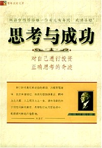

马太效应：从成功走向成功的捷径/西武
内容简介：
凡是有 的，还要给他，使他富
足；但凡没有的，连 他所有的，也要夺去。来自《圣经》的启示，流
传千年的法则！“马太效应”揭示了一个关于个人 和企业资源的重要法
则，富人享有更多的资源—— 金钱、荣誉以及成功、穷人却变得一无所
有。“马 太效应”直接关系到个人事业的成功和企业的发展 ，它为成
功者走向更大的成功提供了方法，也为失 败者超越失败指明了方向。
“凡是有的，还要给他 ，使人富足；但凡没有的， 连了所有的，也要夺
去。”这是《圣经·马太福音》 中的一句名言。 20世纪60年代，著名
社会学家 罗伯特·莫顿首次将这种现象归纳为“马太效应” ——任何个
体、群体或地区，一旦在某一方面 （如金钱、名誉、地位等）获得成功
和进步，就会 产生一种积累优势，就有更多的机会取得更大的成 功和进
步。 “马太效应”直接关系到个人事业的成 功和企业的发展，它为成功
者走向更大的成功提供 了方法，也为失败者超越失败指明了方向。

思考与成功/(美) 奥里森·马登
内容简介：
奥里森·马登（1848-1924）
《成功》杂志在美 国无人不晓，它通过创造性地传播成功学改变 了
无数美国人的命运。而《成功》杂志的创办 人就是奥里森·马登博
士，他被公认为美国成 功学的奠基人和最伟大的成功励志导师。
马登 在7岁时成了孤儿，但他受到了同为孤儿的苏格 兰作家斯迈尔
斯的激励，决心要让世界变得更美 好。经历无数的苦难和艰辛，靠
着日夜不停的 工作，马登撰写了大量鼓舞人心的著作，包括《 一生
的资本》、《思考与成功》、《伟大的励志书》 、《成功的品质》
、《高贵的个性》等等。马登的 书在美国一上市，即受到了大众的
认同，很多公立 学校指定为教科书或参考书，马登的一些著作被翻
译成二十几种文字，在当时就畅销数百万册。 马 登的著作和他所
倡导的成功原则改变了世界各地千 百万贫苦人民的命运，使他们由
一贫如洗变为百万富翁，从无名之辈变为社会名流。
成功心理/李树荫
内容简介：
改革开 放时期，作者致力于成
功的心理与交际的研 究和教育，并创办了我国首个卡耐基口才与交际艺
术学校。其教学内容和以往出版的《实用口语学》 、《请你不要板着
脸》、《潇洒人生》、《无价之宝》 等一系列著作得到了广泛的好评
。《成功心理与交际艺 术》这套丛书，更以求实创新的思想内容启发
人们发展 积极的心理态度，掌握口才与交际艺术，走上人生的成功之
路！ 李树荫：作家。著有剧本《志气歌》、《九号山上的灯光》 和长
篇小说《第三者》等作品。 在改革开放时期，他致力于 成功的心理与
交际的研究和教育，并创办了我国第一个卡耐基 口才与交际艺术学校。
其教学内容和以往出版的《实用口语学》 、《请你不要板着脸》、《潇洒人生》。